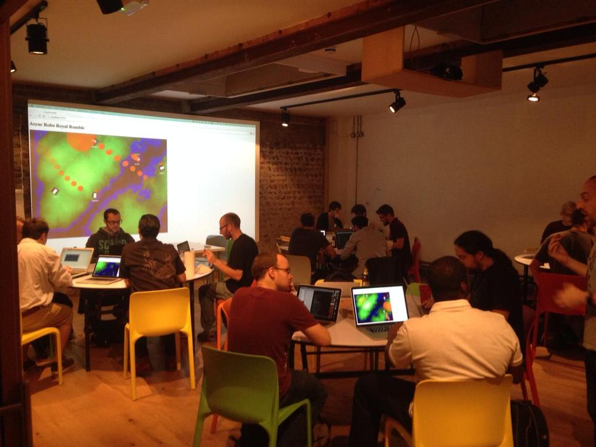

Drone Wars
The 2014 @asyncjs Brighton Digital Festival Hackathon
Mark Everitt / @qubyte
A little about me

- '05 - '12: Quantum Info
- '12 - '15: This!
Ideas
- The web is not (quite) ready for server sent events.
- Testable CJS modules: The FS is you friend.
- ES6 gives you (nearly) everything you need for classy object orientation.
The hackathon
Part of the 2014 Brighton Digital Festival.
Hosted by @asyncjs, the Brighton JavaScript User Group
The concept
Inspired by an old project called robojs
The concept
importScripts('base-robot.js');
ScanBot = BaseRobot;
ScanBot.run = function () {
this.shoot();
this.turn_turret_right(45);
this.move_forward(Math.random() * 400, {
DONE: () => {
this.shoot();
this.turn_right(Math.random() * 90, {
DONE: () => {
this.shoot();
this._run();
}
});
},
ENEMY_COLLIDE: () => {
this.shoot();
this.move_backward(100, {
DONE: () => {
this._run();
},
WALL_COLLIDE: () => {
this._run();
}
});
},
WALL_COLLIDE: () => {
this.turn_left(180, {
DONE: () => {
this.shoot();
this._run();
}
});
}
});
}
The concept
Procedural. A little dull, and not very realistic.
The concept
Wanted something more like this guy.
A Drone
What would it be like for a physical drone in an arena?
- It can know about the locations and speeds of things around it...
- It can accelerate in any direction...
- It can shoot at a location...
- It can know how fast projectiles move...
- It can know how much damage it has taken...
- And nothing else!
Web workers
var myWorker = new Worker('path/to/myWorker.js');
myWorker.postMessage('hello worker');
myWorker.onmessage = function (e) {
console.log(e.data);
};
myWorker.terminate(); // kill the worker
importScripts('path/to/some/library.js');
onmessage = function (e) {
// e.data contains the message from main
};
postMessage(workerResult); // send message to master
close(); // shut myself down
cortex
Script to run in worker for convenience functions:
- cortex.log
- cortex.init
- cortex.Queue
cortex.init
cortex.init(function decider(data, callback) {
// Decide what to do based on data.
// Pass an error to the callback to log an issue with the decider.
// Pass a decision to the callback to instruct the robot body.
callback(null, decision);
});
Turret example
importScripts('/scripts/brains/cortex.js');
cortex.init(function (data, callback) {
var robot = data.robot;
var robots = data.status.robots;
var enemyIds = Object.keys(robots).filter(function (id) {
return id !== robot.id
});
callback(null, {
token: data.token,
acceleration: {x: 0, y: 0},
fire: robots[enemyIds[0]].position
});
});
Turret example
The Battlefield
- This is the code running in the main thread.
- Contains robots projectiles and explosions.
- Generative landscape (wanted to do more on this but ran out of time).
- Impassable terrain (turned off).
Main Thread Web Workers
+-------------------------------------------+
| Battlefield |
| +---------+ +----------+ +----------+ | +-------+
| |Explosion| |Projectile| | |<-------| |
| +---------+ +----------+ | Robot | | | Brain |
| | +------->| |
| +---------+ +----------+ +----------+ | +-------+
| |Explosion| |Projectile| |
| +---------+ +----------+ +----------+ | +-------+
| | |<-------| |
| +---------+ +----------+ | Robot | | | Brain |
| |Explosion| |Projectile| | +------->| |
| +---------+ +----------+ +----------+ | +-------+
| |
| +---------+ +----------+ +----------+ | +-------+
| |Explosion| |Projectile| | |<-------| |
| +---------+ +----------+ | Robot | | | Brain |
| +-------+ | +------->| |
| |Terrain| +----------+ | +-------+
| +-------+ |
+-------------------------------------------+
Battlefield example
The server
- Tiny express server.
- Provides an uploader for code and images.
- Uses browserify for browser code. Updates on change.
The Event
Thoughts
Thanks!
If we have time...
let MyClass = () => {
let privateData = new WeakMap();
function privateMethod(instance) {
let privateData = privateData.get(instance);
// Do something with private data;
}
return class MyClass {
constructor() {
privateData.set(this, {});
}
someMethod() {
let private = privateData.get(this);
// Do something with private data;
}
someOtherMethod() {
return privateMethod(this);
}
}
}();